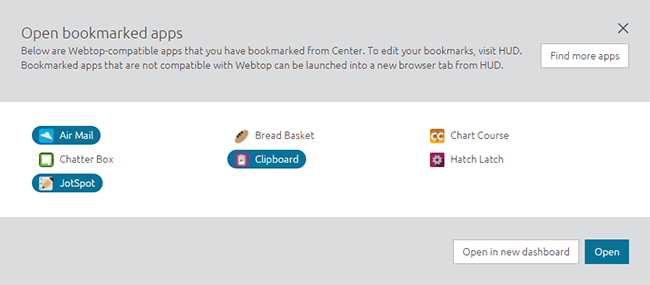

Any listing you bookmarked in HUD will be accessible to use in Webtop.
To add a listing to your Webtop:
Click the in the lower-left corner.
A window will appear displaying all the listings you bookmarked in the HUD.
Select the ones you want to add and click Open in a new dashboard or Open. To add new listings, click Find more apps which will open Center where you can bookmark more listings.

The listings will open in the dashboard and its small icon will appear at the bottom of the screen.